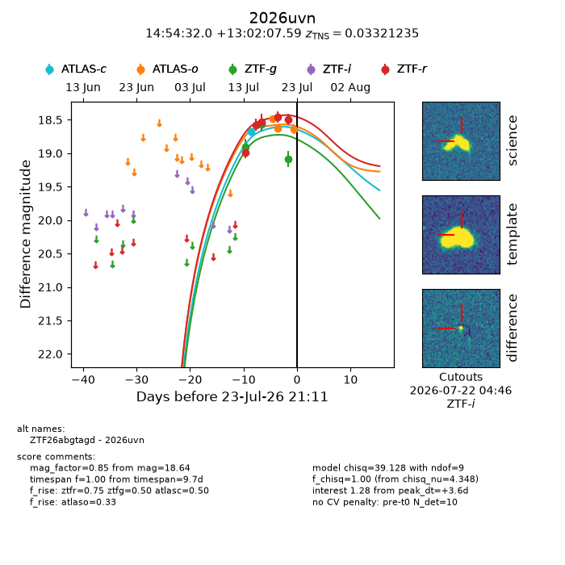
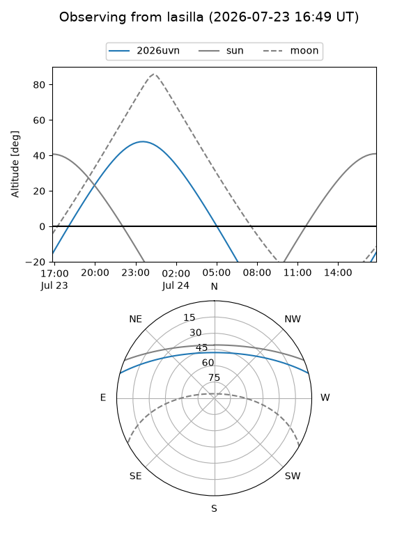
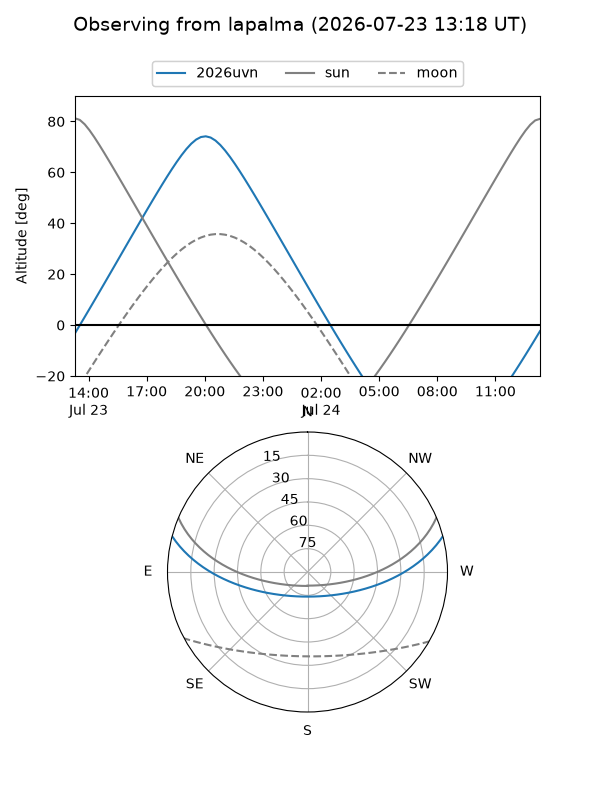
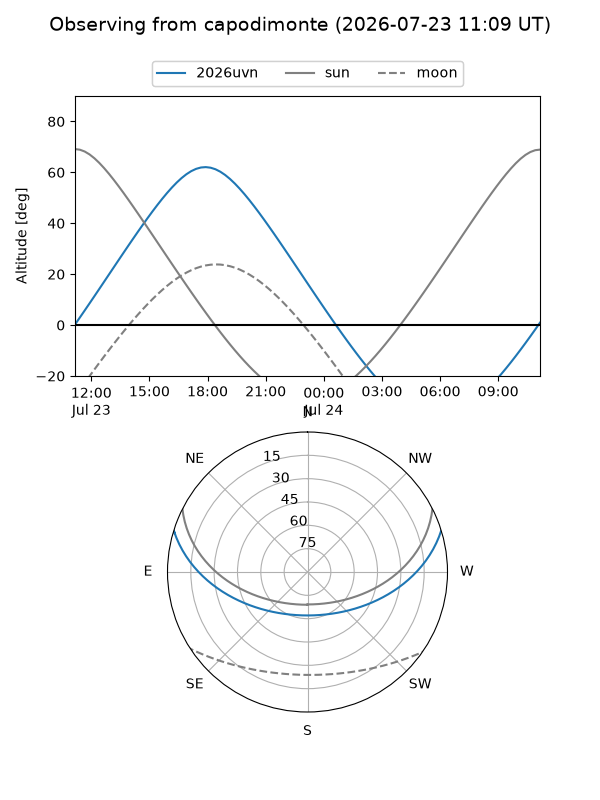
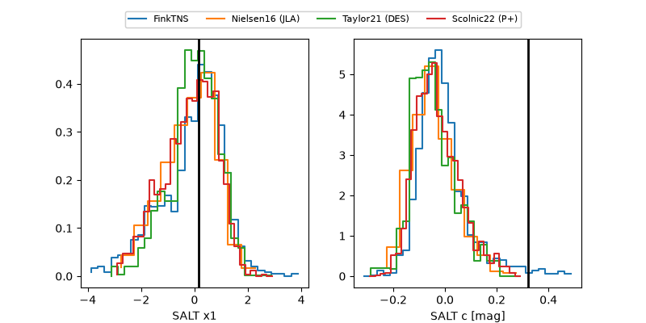

2026uvn
Target 2026uvn at 2026-07-23 21:14
Aliases and brokers:
FINK-ZTF: ztf.fink-portal.org/ZTF26abgtagd
Lasair-ZTF: lasair-ztf.lsst.ac.uk/objects/ZTF26abgtagd
ALeRCE-ZTF: alerce.online/object/ZTF26abgtagd
YSE-PZ: ziggy.ucolick.org/yse/transient_detail/2026uvn
TNS name: wis-tns.org/object/2026uvn
Direct TNS query: direct search
alt names
ZTF26abgtagd (ztf,fink_ztf)
2026uvn (tns,yse)
Coordinates:
equatorial (ra, dec) = 223.6333,+13.03544
equatorial (HMS+DMS) = 14:54:32.00,+13:02:07.59
galactic (l, b) = (12.9811,+57.97489)
Flags:
TNS type: SN Ic
TNS redshift: 0.0332
peak dt: +3.6
Photometry:
last atlasc=18.68, atlaso=18.64, ztfg=19.08, ztfr=18.49
1 atlasc, 4 atlaso, 3 ztfg, 5 ztfr detections
Lightcurve

Visibility



Additional plots
